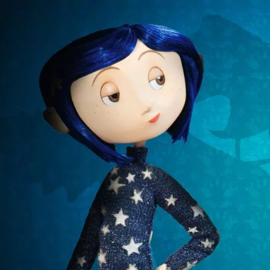
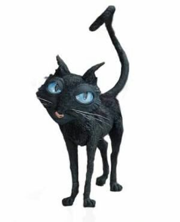
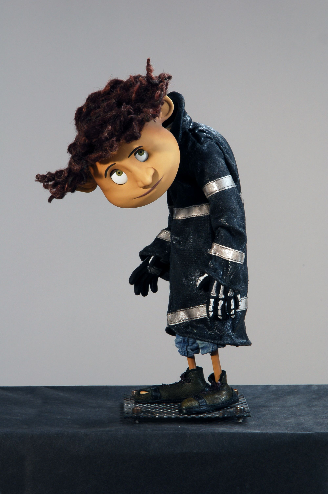
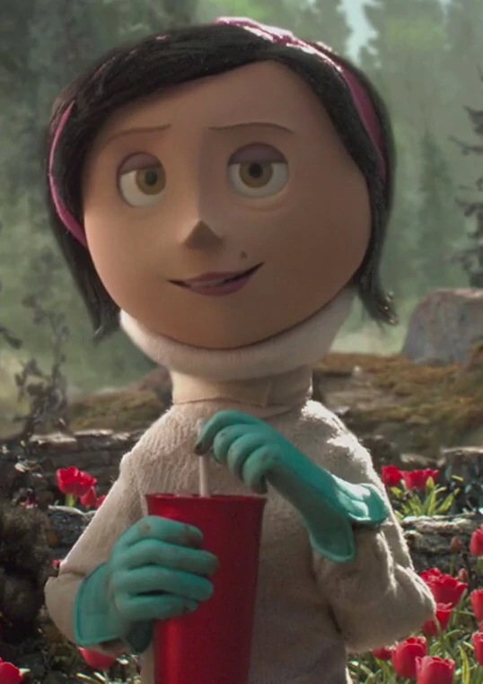
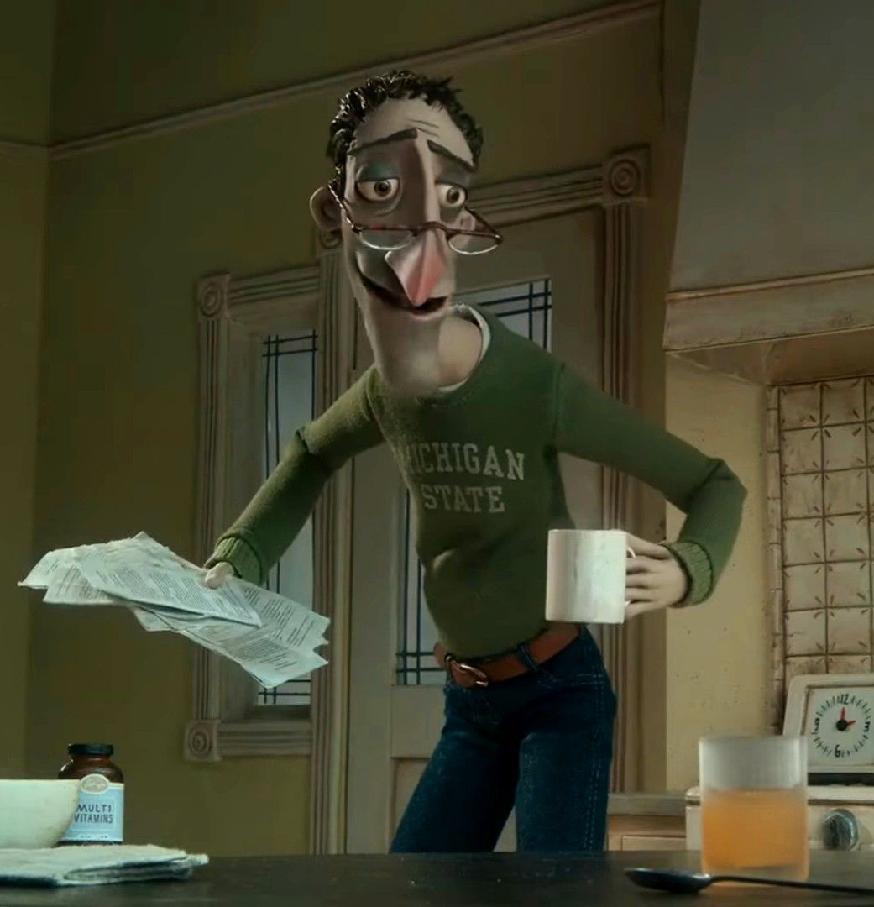
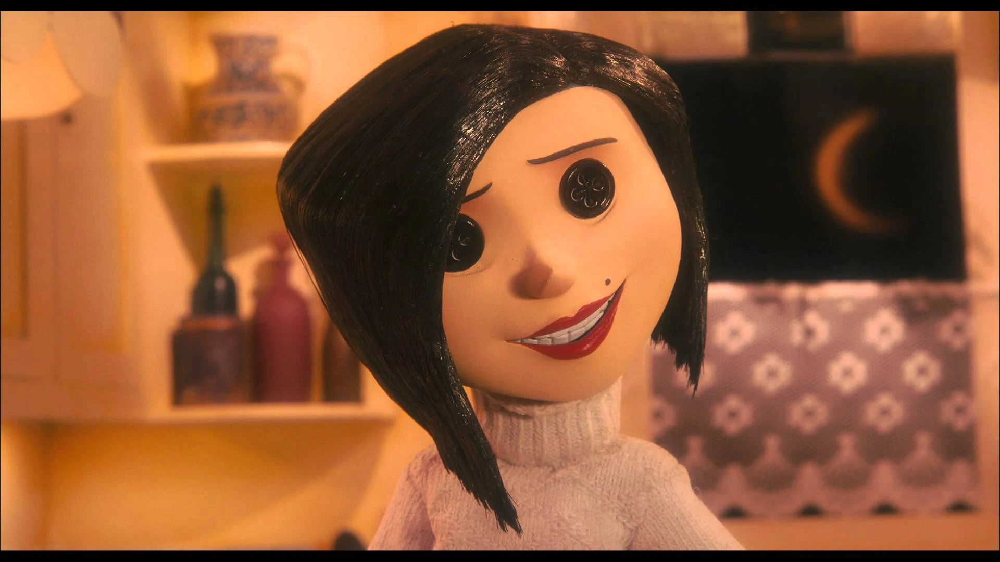
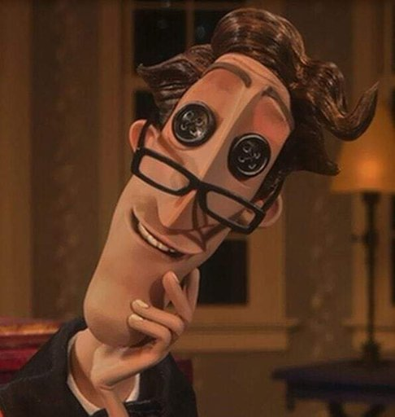

Coraline Jones (originalmente dublada por Dakota Fanning ) é uma garota de 11 anos.
Tem curtos cabelos azuis e pele pálida. Ela tem sardas no rosto e um nariz pontudo.
Suas roupas são compostas ( em grade parte do filme ) por uma capa de chuva e galochas amarelas,
uma calça jeans surrada e uma blusa de mangas longas salmão-alaranjada com listras horizontais e um prendedor de cabelo em formato de libélula.

O gato é um dos personagens principais da história, e é dublado por Keith David no filme. Ele aparece e desaparece à vontade e tem a capacidade de falar no outro mundo.
Não há nada específico descrito sobre o gato no livro que não seja a cor de sua pele, mas no filme, a aparência de gato é mais distintivo.
Sua orelha esquerda está dividida, por uma razão desconhecida, e tem uma estrutura corporal muito fina. Fora isso, seus olhos azuis contrastam com a cor da sua pele.

Wyborne, também conhecido como Wybie, é o nerd e ansioso de onze anos do proprietário do Palácio Cor De Rosa.
Ele está apenas na adaptação cinematográfica, com a razão de que o espectador "não teria uma garota andando por aí, ocasionalmente falando sozinha".
Wybie está constantemente nervoso. No entanto, ele é um aventureiro um pouco parecido, mas não idêntico, a Coraline.

Melinda "Mel" Jones tem 45 anos, é mãe de Coraline Jones e esposa de Charlie Jones . Ela é constantemente vista como muito ocupada e com pouco tempo para sua filha, de acordo com seu trabalho como editora de catálogo de jardinagem
Embora muito ocupada com seu trabalho como editora de catálogos de jardinagem, Mel ama muito Coraline, apesar da falta de tempo e atenção que ela dá à filha

Charlie com 40 anos muito parecido com sua esposa, Mel Jones, está constantemente ocupado digitando para seu catálogo de jardinagem, e não tem muito tempo e atenção de sobra para sua filha, Coraline
No entanto, apesar disso, como pai, ele também a ama e se importa profundamente com ela, assim como Mel.

A Beldam (também conhecida como a Outra Mãe, em referência ao seu outro disfarce maternal) é a principal antagonista de Coraline.
Ela é uma entidade demoníaca que muda de forma que atrai crianças para outra dimensão com o objetivo de levar sua alma.
Sua aparência original se assemelha estranhamente a Mel Jones , mas sua forma verdadeira e sinistra é mais tarde revelada como sendo uma forma de aracnídeo.

O Outro Pai , criado pelo beldam , era um boneco (feito de uma abóbora) usado para ajudar a enganar Coraline Jones para ficar no outro mundo
No filme, ele aparece idêntico ao verdadeiro pai de Coraline. Ele sabe tocar piano, mas para tocar peças complexas, ele precisa das mãos mecânicas que são sua marca registrada.
É sugerido ao longo do filme que ele tem pavor da Outra Mãe, fazendo o que ela diz e obedecendo a todos os seus comandos.
Topo da Página